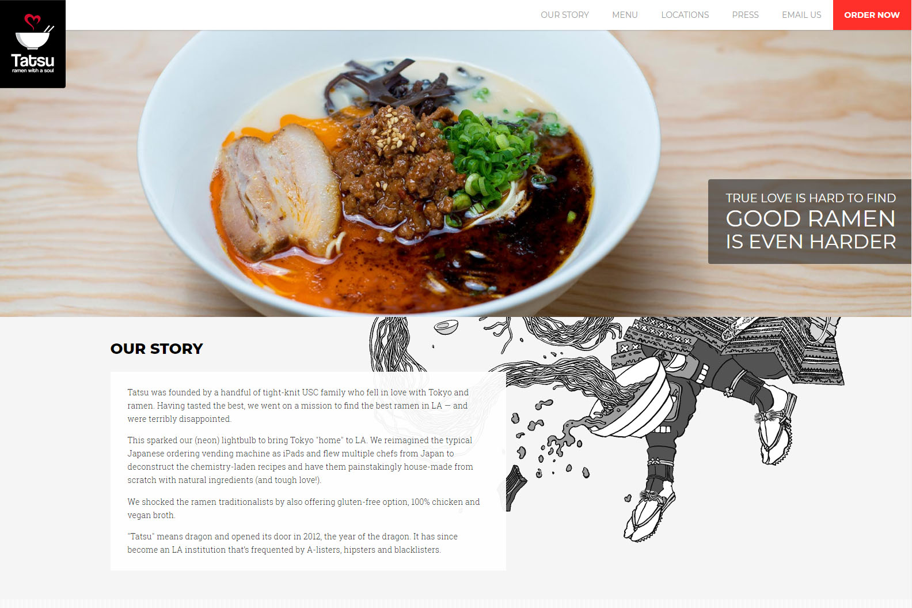
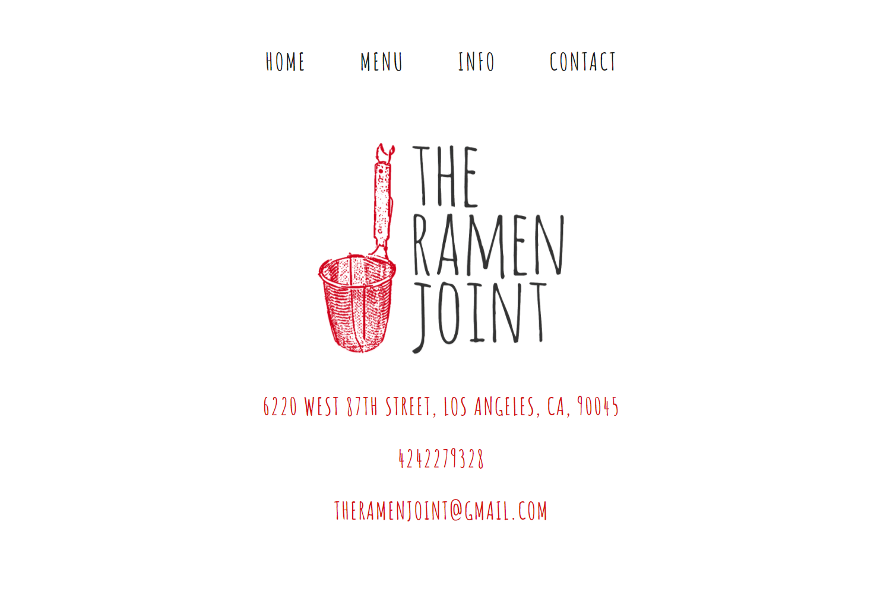
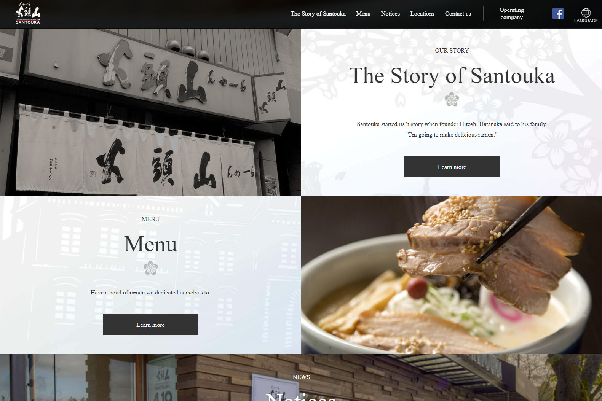
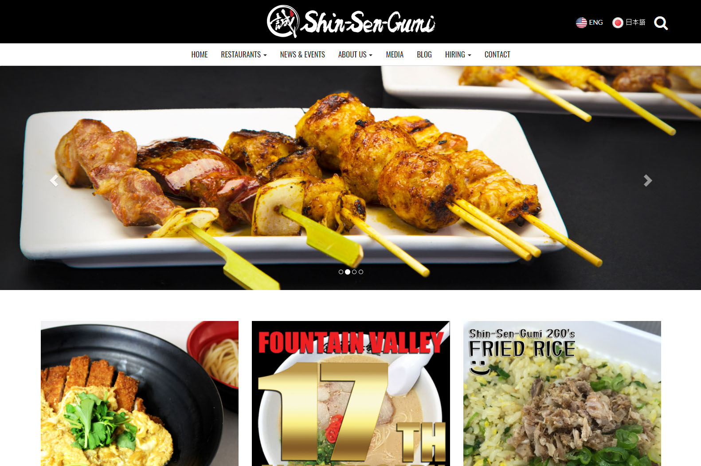

Client
Tatsu Ramen
What Works:
Navigation brings you anywhere on the first page. Info is compressed to one page so doesn't require extra loading when clicking through nav.
Nice background texture and background-image scroll.
I like the little animation piece where the logo scrolls up and reveals the underneath fixed-position navigation logo.
Nicely layed out menu.
Online ordering menu is very well done.
Border-radius on some boxes give it a nice modern touch
Consistant color-scheme
What Doesn't Work:
Considering how other areas of the site is animated, like the fixed background-image and hover animations, some buttons do not have an animtion. I also expect they should do more with the top piece like turn it into a slider. Though maybe they didn't include a banner because they don't want to overdo page animations.
Litle swiggly when choosing stores seems kind of off.
I feel the background-image thing could be altered some other way instead of seeing the lower half first when entering the page. Though when I scrolled down, it seemed to fit nicely when "Our Story" sits on top of the page.
I was hoping there would be a price displayed somewhere, possibly on hover.
The menu items look like they could be clickable but they're just there for display.
Goals
Provide info for customers about the restaurant(contact, location, menu)
Increase profit through traffic & online ordering
Design responsively
Establish a larger local presence
Target Audience
Ages: 18-30, Income: $0-$50,000
High diversity of Asians + Hipsters, A-listers, Blacklisters
Thoughts
As stated in "What Doesn't Work," some areas of the website could be changed for better appearance of the site. For example, it may be a bit too static and could use more subtle but effectively dinamic animation. Though it may be "soul ramen" and given a chiller vibe, I believe to appeal to the young target audience, you'd have to add more movement.
Tasks
The site will have to be rebuilt in order to accomodate the goal of what needs to be changed.
New photos will be added in order to give a better idea of the restaurant's environment and help draw in more customers
The logo and brand name will need be tweaked
Competitors
The Ramen Joint
Score: 5.5
Visual Design: 8
Lovely simple design. Does not go overboard and everything is displayed almost perfectly. Only issue I have is a small portion of the menu where toppings take up way too much scroll space and font is hard to read.
Content: 5
It doesn't say anything about the restaurant itself, just the basic info needed (menu, location, contact).
"Call to Action": 1
It's too simple to the point it's only like an info book. No text giving a "Call to Action" kind of thing other than it looks nice. Simple display of their logo and info and that's about it.
Navigation: 10
I'm sure a 5 year old can navigate through this site. It's very straightforward.
Functionality: 8
Everything is functional. The icon brings you back to home page like any other site. Contact page is simple and nice as well. The menu page scrolls down for awhile and doesn't have a "back to top" button. Might be nice to have one since the navigation is pretty far from below.
Community Building: 0
No social media displayed. It seems a little unfriendly to not have one.
Hokaido Ramen Santouka
Score: 7.8
Visual Design: 8.5
Beautiful load animation along with hover animations that are slow and zen-like. First look at site gives you a vrey good first impression. It even has a subtle fixed background-image displayed on 2 boxes in the front page. The menu page isn't up to par with the rest of the site but still nice and simple. I do have a few nit picks on areas like some text is hard to see because they're too small or against a non-contrasting background.
Content: 10
They actively update their notices page. Not as often as weekly, but they have a notices page! They also talk about their story and has a lot of info about their locations and a whole nother site for corporate information.
"Call to Action": 6
Front page displays an animation with the restaurant with people eating and chefs cooking. It makes visitors want to visit one of their restaurants because it looks very lively and made by heart and passion. Customers look content so I might as well go too.
Navigation: 8
It has a lot of info so it does at times seem cluttered while trying to maintain a visual appeal. The bottom section will take you to another part of the site too and the top navigation bar doesn't sit very well with me when it retracts at the top of the page.
Functionality: 9
Nearly everything is functional. Though I wish some areas were better, for example the products their product collaborations doesn't have any info or link to purchase at any local stores. Locations section is pretty cool with finding their restaurant nearby us. They have a ton of locations.
Community Building: 5
They don't seem to have social media but they do try to keep in touch with the community on the notices page.
Shin-Sen-Gumi
Score: 8
Visual Design: 6
Their visuals are nice, a little crazy on some parts like having a bunch of different fonts but I think it plays well. I feel the first 6 boxes don't complement each other very well and it could be put together stronger. The front page blog section strangely only has 1 post and aligned to the left rather than symmetrically on the middle since it only have one. The rest of the stuff I like the elements of it like the zig-zag lines instead of a straight cut-off.
Content: 9.5
They have a lot of info about themselves with categories such as, who they are, their history, social responsibilities, and their food. They even have some in-depth food descriptions. Though I am still wondering why the random blog section is on the front page.
"Call to Action": 7
They straight up advertise their food with slide shows of food and their restaurant. They look pretty good and I'd go there to have some of that. The location is also not far down the front page in case the visitor is sold from the looks of things.
Navigation: 7
I don't understand why the menu isn't one of the main navigation items. It's only a sub item under "About Us" which I think takes much extra effort to get it. It's also on the front page but not everyone is meaning to scroll through it. Everything else is organized nicely.
Functionality: 9
Everything appears to be functioning the way it should.
Community Building: 10
They seem to have a decent following on social media. They also have a News & Events page to keep people updated on what's new, latest deals, etc. Stuff that keeps coming back.